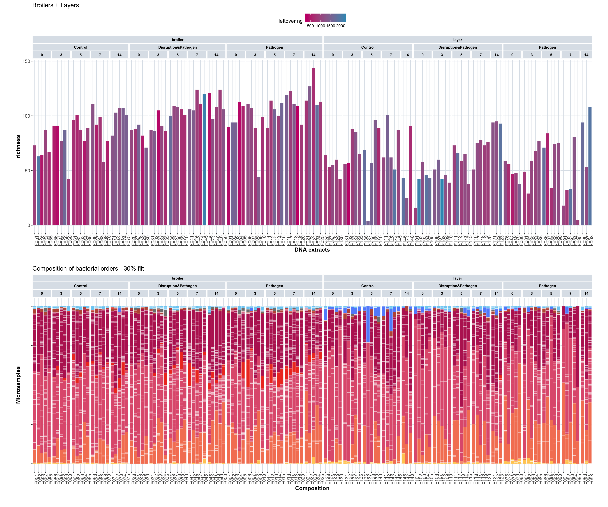
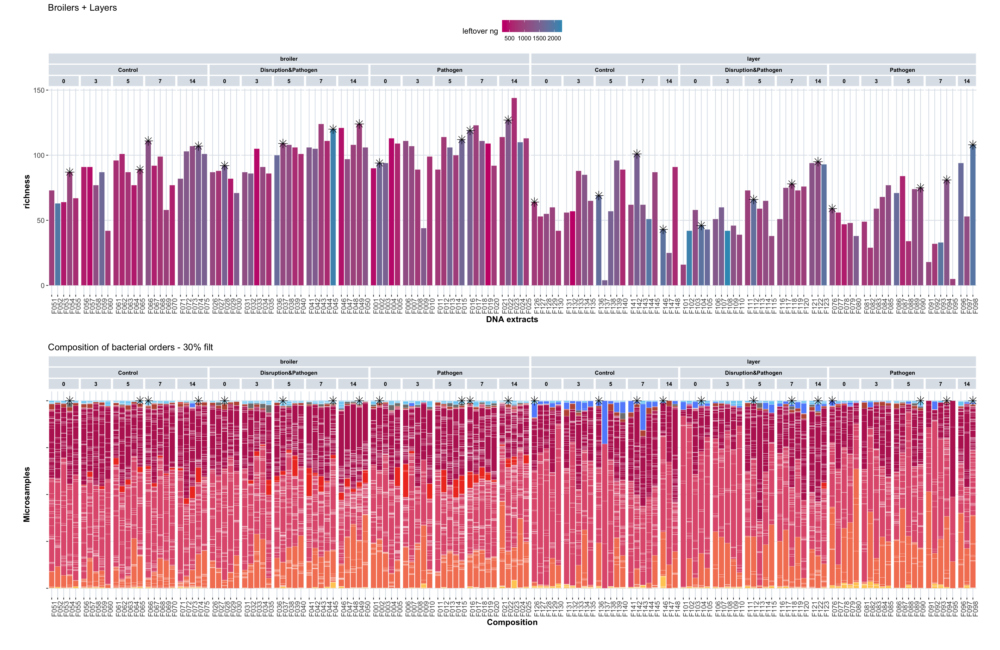

13 PacBio Selection Analysis
13.1 Overview
This chapter identifies samples suitable for PacBio sequencing based on DNA concentration, elution volume, and alpha diversity metrics. PacBio long-read sequencing requires high-quality DNA samples with sufficient quantity and concentration for library preparation.
13.2 Selection Criteria
PacBio sequencing requirements: - Elution volume: >50 uL - DNA concentration: >80 ng/uL - Minimum total DNA: 50 × 80 = 4000 ng per sample
Selection strategy: - Target: 24 samples to provide 4800 ng total DNA (200 ng per sample × 24) - Taxonomic representation: 2 breeds × 3 treatments = 6 treatment groups - Temporal coverage: 4 time points (days 0, 5, 7, 14 post-infection) - Total samples: 4 days × 6 groups = 24 samples
13.4 Prepare Extract Metadata
This section loads DNA extraction metadata from Airtable, including concentration, elution volume, and remaining quantities. This metadata is used to identify samples meeting PacBio requirements.
# Load DNA extraction metadata from Airtable
# This includes concentration, elution volume, and leftover quantities for each extract
extract_metadata_macro <- airtable("2-EX-Info", "apphvsV2YKhTCMKGS") %>%
# select columns to extract
read_airtable(., fields = c(
"Extract", "Barcode", "Concentration_ng_uL", "ElutionVolume_uL",
"LeftOver_uL", "LeftOver_ng", "AcidNucleicMaterial",
"LabBatch_text", "ExperimentalUnit"), id_to_col = TRUE) %>%
# rename columns
rename(
EX_batch = "LabBatch_text",
extract = "Extract",
animal = "ExperimentalUnit",
tube_barcode = "Barcode",
DNA_concentration = "Concentration_ng_uL",
elution_uL = "ElutionVolume_uL",
leftover_uL = "LeftOver_uL",
leftover_ng = "LeftOver_ng",
nucleic_acid = "AcidNucleicMaterial"
) %>%
# select relevant batches
filter(EX_batch %in% c("EXB020","EXB021")) %>%
unnest(c(nucleic_acid, animal)) %>%
# select relevant columns
select(EX_batch, extract, animal, tube_barcode, DNA_concentration, elution_uL, leftover_uL, leftover_ng, nucleic_acid) %>%
filter(nucleic_acid == "DNA") %>%
# un-nest columns that appeared as a list
arrange(animal)13.5 Merge Metadata with Sample Information
This section merges extract metadata with sample metadata and alpha diversity metrics to create a comprehensive dataset for sample selection.
# Merge extract metadata with sample metadata
# This links extraction information to experimental samples (animal, treatment, breed, age)
extract_sample_metadata_macro <- extract_metadata_macro %>%
left_join(sample_metadata_macro, by = join_by(animal == animal)) %>%
rename(microsample=sample)
extract_sample_div_metadata_macro <- extract_sample_metadata_macro %>%
left_join(alpha_div_macro_filtered_30, by = join_by(microsample == microsample)) 13.6 Visualize DNA Concentration and Richness
This section creates visualizations to assess DNA extraction quality (leftover quantity) and taxonomic richness across all samples, helping identify candidates for PacBio sequencing.
# Plot 1: DNA leftover quantity by extract
# Shows remaining DNA quantity after initial use, indicating sample availability
barplot_1 <- extract_sample_div_metadata_macro %>%
filter(treatment != "TF0") %>%
ggplot(aes(x = extract, y = leftover_ng)) +
geom_bar(stat = "identity", colour = "white", linewidth = 0.1) +
labs(x = "DNA extracts", y = "leftover_ng", fill = "Read type") +
facet_nested(. ~ animal_breed + treatment_expl + age, scales = "free", space = "free") +
custom_ggplot_theme +
theme(axis.text.x = element_text(angle = 90, hjust = 1),
axis.text.y = element_text(), #axis.text.x = element_blank(),
legend.position = "bottom",
plot.margin = margin(0.2, 0.2, 0.2, 0.2)) +
ggtitle("Broilers + Layers")
# barplot_1 # Individual plot commented out - used in combined plot
# Plot 2: Taxonomic richness by animal, colored by leftover DNA quantity
# Combines diversity metrics with DNA availability information
barplot_2 <- extract_sample_div_metadata_macro %>%
filter(treatment != "TF0") %>%
ggplot(aes(x = animal, y = richness, fill = leftover_ng)) +
geom_bar(stat = "identity", colour = "white", linewidth = 0.1) +
labs(x = "DNA extracts", y = "richness", fill = "Read type") +
scale_fill_gradient(low = "#c90076", high = "#3598bf", name = "leftover ng") +
facet_nested(. ~ animal_breed + treatment_expl + age, scales = "free", space = "free") +
custom_ggplot_theme +
theme(axis.text.x = element_text(angle = 90, hjust = 1),
axis.text.y = element_text(), #axis.text.x = element_blank(),
legend.position = "top",
plot.margin = margin(0.2, 0.2, 0.2, 0.2)) +
ggtitle("Broilers + Layers")
# barplot_2 # Individual plot commented out - used in combined plot
# Plot 3: Taxonomic composition by order
# Shows community structure to ensure taxonomic diversity in selected samples
barplot_3 <- tidy_plot_genome_counts_filt_30_macro_closed %>%
filter(treatment != "TF0") %>%
ggplot(aes(x = animal , y = count, fill = order)) +
geom_bar(stat="identity", colour="white", linewidth=0.1) + #plot stacked bars with white borders
scale_fill_manual(values = order_colors[-4], drop = FALSE) +
labs(x = "Composition",y = "Microsamples",fill = "Read type") +
facet_nested(. ~ animal_breed + treatment_expl + age, scales = "free", space = "free") +
custom_ggplot_theme +
theme(axis.text.x = element_text(angle = 90, hjust = 1),
axis.text.y = element_blank(),
legend.position = "none") +
ggtitle("Composition of bacterial orders - 30% filt")
# barplot_3 # Individual plot commented out - used in combined plot# Combined visualization: richness and taxonomic composition
# Shows both diversity metrics and community structure for sample assessment
barplot_2/barplot_3
13.7 Identify Best Samples
This section applies selection criteria to identify the best samples for PacBio sequencing, ranking samples by combined richness and DNA availability metrics.
# Define required DNA quantity per sample for PacBio library preparation
required_ng_PacBio = 220
# Select best samples based on combined ranking of richness and DNA availability
# Filter for target time points (days 0, 5, 7, 14) and exclude TF0 control
best_samples <- extract_sample_div_metadata_macro %>%
filter(treatment != "TF0") %>%
filter(age %in% c(0, 5, 7, 14)) %>%
group_by(animal_breed, treatment_expl, age) %>%
mutate(
richness_rank = rank(desc(richness), ties.method = "min"),
leftover_rank = rank(desc(leftover_ng), ties.method = "min"),
combined_rank = richness_rank*1.2 + leftover_rank
) %>%
slice_min(combined_rank, n = 1, with_ties = FALSE) %>%
ungroup()
# Calculate volume and quantity requirements for PacBio sequencing
# Determines how much volume is needed per sample and what remains after extraction
best_samples <- best_samples %>%
mutate(
uL_required = ceiling(required_ng_PacBio / DNA_concentration), # Volume needed for 220 ng
uL_left_after_pacbio = (leftover_uL - uL_required), # Remaining volume
ng_left_after_pacbio = (leftover_ng - required_ng_PacBio) # Remaining quantity
)13.8 Visualize Selected Samples
This section marks selected samples on the visualization plots to show which samples were chosen for PacBio sequencing.
# Mark selected samples with star symbols on the richness plot
barplot_4 <- barplot_2 +
geom_point(
data = best_samples,
aes(x = animal, y = richness),
shape = 8, # star shape
size = 4,
color = "black",
inherit.aes = FALSE
)
# Mark selected samples on the composition plot
barplot_5 <- barplot_3 +
geom_point(
data = best_samples,
aes(x = animal, y = 1),
shape = 8, # star shape
size = 4,
color = "black",
inherit.aes = FALSE
)
# Display combined plot with selected samples marked
barplot_4/barplot_5
13.9 Calculate Pooling Requirements
This section calculates the pooling requirements for combining selected samples, including total volume, concentration, and condensation needs.
# A tibble: 24 × 27
EX_batch extract animal tube_barcode DNA_concentration elution_uL leftover_uL leftover_ng nucleic_acid microsample batch tissue treatment age treatment_expl animal_breed
<chr> <chr> <chr> <chr> <dbl> <int> <int> <dbl> <chr> <chr> <chr> <chr> <chr> <fct> <chr> <chr>
1 EXB021 F054aBD1 F054 LV1059332428 26.5 45 37 980. DNA D301022 S3B018 Digesta TF3 0 Control broiler
2 EXB020 F065cBD1 F065 LV1059330227 26.1 45 37 966. DNA D300955 S3B017 Digesta TF3 5 Control broiler
3 EXB021 F066dBD1 F066 LV1059332507 31.3 45 39 1221. DNA D301028 S3B018 Digesta TF3 7 Control broiler
4 EXB021 F074eBD1 F074 LV1059332437 36.7 45 40 1468 DNA D301032 S3B018 Digesta TF3 14 Control broiler
5 EXB021 F028aBD1 F028 LV1059332429 38.1 45 40 1524 DNA D301009 S3B018 Digesta TF2 0 Disruption&Pathog… broiler
6 EXB020 F037cBD1 F037 LV1059330299 28.5 45 38 1083 DNA D300941 S3B017 Digesta TF2 5 Disruption&Pathog… broiler
7 EXB020 F045dBD1 F045 LV1059330258 52.5 45 41 2152. DNA D300945 S3B017 Digesta TF2 7 Disruption&Pathog… broiler
8 EXB020 F049eBD1 F049 LV1059330224 25 45 37 925 DNA D300947 S3B017 Digesta TF2 14 Disruption&Pathog… broiler
9 EXB021 F002aBD1 F002 LV1059332433 39.8 45 40 1592 DNA D300996 S3B018 Digesta TF1 0 Pathogen broiler
10 EXB020 F015cBD1 F015 LV1059330306 40 45 40 1600 DNA D300930 S3B017 Digesta TF1 5 Pathogen broiler
# ℹ 14 more rows
# ℹ 11 more variables: type_simple <chr>, richness <dbl>, neutral <dbl>, phylogenetic <dbl>, filter_level <chr>, richness_rank <int>, leftover_rank <int>, combined_rank <dbl>,
# uL_required <dbl>, uL_left_after_pacbio <dbl>, ng_left_after_pacbio <dbl># Calculate pooling statistics
total_uL <- sum(best_samples$uL_required, na.rm = TRUE)
total_ng <- required_ng_PacBio * 24
pool_conc <- round(total_ng / total_uL, 2)
target_conc <- 80
condensed_volume <- round(total_ng / target_conc, 2)
cat(
"The pool of 24 extracts (", required_ng_PacBio," ng per extract) will have a volume of", total_uL, "µL.\n",
"And a concentration of", total_ng, "ng /", total_uL, "µL =", pool_conc, "ng/µL.\n\n",
"To reach a concentration of", target_conc, "ng/µL, we should condense the pool to", condensed_volume, "µL.\n"
)The pool of 24 extracts ( 220 ng per extract) will have a volume of 165 µL.
And a concentration of 5280 ng / 165 µL = 32 ng/µL.
To reach a concentration of 80 ng/µL, we should condense the pool to 66 µL.13.10 Export Selected Samples
This section prepares and exports the final list of selected samples with all relevant metadata for PacBio sequencing.
# Prepare export data frame with essential information
best_samples_export <- best_samples %>%
select(EX_batch, extract, animal, tube_barcode, DNA_concentration, elution_uL, leftover_uL, leftover_ng, uL_required,
microsample, animal_breed, treatment, age, richness, uL_left_after_pacbio, ng_left_after_pacbio)
best_samples_export
write.csv(best_samples_export,
file = "pacbio_selection_adenovirus.csv", row.names = FALSE)